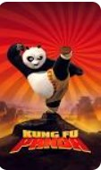
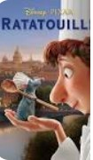
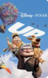
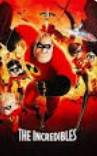
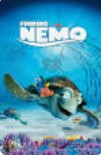

I will tell you a little about myself
My name is Elisheva Albukai
I am a mother of two sweet children
I graduated with a software engineering degree from Azrieli College
| Movie name | Poster | Description |
|---|---|---|
| Kung Fu Panda |  |
Po, a clumsy panda, is a kung fu fanatic who lives in the Valley of Peace and works
in his goose father Mr. Ping's noodle shop, unable to realize his dream of learning the art of kung fu |
| Ratatouille |  |
Remy, a young rat with heightened senses of taste and smell,
dreams of becoming a chef like his human idol, the late Auguste Gusteau, but the rest of his colony, including his older brother Émile and his father, the clan leader Django, only eat for sustenance and are wary of humans |
| Up |  |
10-year old Carl Fredricksen idolizes famed explorer Charles Muntz.
Muntz was discredited when a giant bird skeleton he brought back from Paradise Falls in South America was deemed a fake, and he returned to the Falls soon after, vowing to bring back a living specimen |
| The Incredibles |  | On the day of his wedding with Helen Truax (alias Elastigirl),
superhero Bob Parr (alias Mr. Incredible) thwarts a civilian's attempted suicide by tackling him through a skyscraper window |
| Finding Nemo |  |
Clownfish Marlin lives in an anemone in the Great Barrier Reef with his partner, Coral.
The couple are awaiting for their many eggs to hatch |